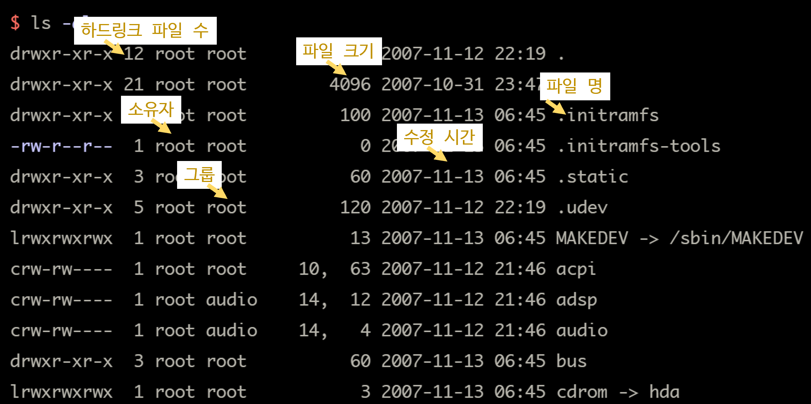
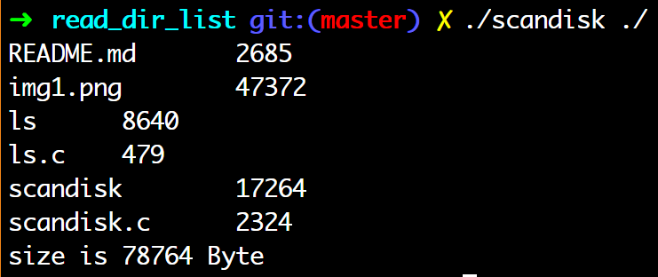

파일시스템 API <1> 디렉터리 관련 함수: opendir(), fdopendir(), readdir(), closedir(), scandir()
디렉터리 내용 읽기
디렉터리 엔트리 리스트 API
- 디렉터리 또한 open(), read(), close()
- 디렉터리 내 파일 1개 정보 = 1개 구조체 = 디렉터리 엔트리
opendir():3
#include <sys/types.h>
#include <dirent.h>
DIR *opendir(const char *path);
- opendir()은 path로 지정한 디렉터리를 읽기 위해 open 후, DIR 타입 포인터반환
- DIR 타입은 디렉터리를 읽어들이기 위한 스트림 관리 구조체
fdopendir():3
#include <sys/types.h>
#include <dirent.h>
DIR *fdopendir(int fd);
- opendir()과 비슷하지만, open fd가 참조하는 디렉터리에 대한 디렉터리 스트림을 반환한다.
| opendir(), fdopendir() return |
value |
|---|---|
| 성공 | *DIR 타입 디렉터리 스트림 |
| 실패 | NULL errno set |
readdir():3
#include <sys/types.h>
#include <dirent.h>
struct dirent *readdir(DIR *d);
- 기능: 디렉터리 스트림 d로부터 엔트리를 하나씩 읽어 들여 struct dirent 타입으로 반환한다.
| return | value |
|---|---|
| 성공 | struct dirent* |
| 실패 | NULL |
- struct dirent의 내용은 OS마다 다르다.
- 리눅스에서는 적어도 엔트리의 이름에 해당하는 char *d_name이 있다.
d_name은 '\0'을 마지막으로 담고 있는 문자열.
- 리눅스에서는 적어도 엔트리의 이름에 해당하는 char *d_name이 있다.
- readdir()가 반환하는 포인터는 다시 호출했을 때 덮어 쓰이므로 주의해야한다.

- struct dirent의 내용
- printf(“%s”, d_name);
closedir():3
#include <sys/types.h>
#include <dirent.h>
int closedir(DIR *d);
- 기능: 디렉터리 스트림 d를 닫는 함수
| return | value |
|---|---|
| 성공 | 0 |
| 실패 | -1 |
이외에도 fseek(), ftell()에 대응하는 seekdir()과 telldir()도 있다.
예제 1. ls 명령 구현
#include <stdio.h>
#include <stdlib.h>
#include <sys/types.h>
#include <dirent.h>
static void do_ls(char *path);
int main(int argc, char *argv[]){
int i;
if(argc<2){
fprintf(stderr,"%s: no arguments\n",argv[0]);
exit(1);
}
for(i=1;i<argc;i++){
do_ls(argv[i]);
}
exit(0);
}
static void
do_ls(char *path){
DIR *d;
struct dirent *ent;
d=opendir(path);
if(!d){
perror(path);
exit(1);
}
while(ent=readdir(d)){
printf("%s\n",ent->d_name);
}
closedir(d);
}
해당 디렉터리 재귀 검색
#include <sys/stat.h>
#include <stdlib.h>
#include <dirent.h>
#include <unistd.h>
#include <stdio.h>
#include <string.h>
// 파일의 크기를 저장하기 위한 변수
long int total_size=0;
// 디렉터리 들여쓰기를 위한 디렉터리 depth 레벌 저장용
int indent=0;
// 함수는 인자로 디렉터리 이름을 입력받는다.
void dir_parser(char *wd){
struct dirent **items;
int nitems, i, j;
struct stat fstat; // struct stat은 파일의 메타정보 저장 구조체
char per;
// 인자로 받은 디렉터리로 이동한다.
if(chdir(wd)<0){
perror("chdir ");
exit(1);
}
/* scandir 함수를이용해서 현재 디렉터리의 모든 파일과 디렉터리의 내용을 가져온다. */
nitems=scandir(".", &items, NULL, alphasort);
/*
* 디렉터리(파일포함) 항목의 갯수만큼 루프를 돌리며
* 만약 해당 파일이 디렉터리일 경우
* dir_parser 함수를 재귀 호출 한다.
*/
for(i=0; i<nitems; i++){
// 파일 상태를 저장하기 위한 구조체
struct stat fstat;
// 현재 디렉터리, 이전 디렉터리는 무시한다.
if((!strcmp(items[i]->d_name,"."))||(!strcmp(items[i]->d_name, ".."))){
continue;
}
/*
* 파일의 상태를 얻어와서 fstat로 저장한다
* lstat은 해당파일이 심볼릭링크일 경우, 그 심볼릭링크를 전달
*/
lstat(items[i]->d_name, &fstat);
/* 디렉터리의 depth는 "\t"를 통해서 이루어진다.
해당 depth의 크기만큼 "\t"를 반복해서 출력한다. */
for(j=0; j<indent; j++)
printf("\t");
// 파일이름(디렉터리) 이름과 크기를 출력하고, 총계를 내기 위해서 total_size에 더해준다.
printf("%s\t%ld\n", items[i]->d_name, fstat.st_size);
total_size += fstat.st_size;
/*
* 만약 파일이 디렉터리라면, dir_parser를 재귀호출한다.
* 그리고 디렉터리의 depth 레벨을 1 증가한다.
*/
if (S_ISDIR(fstat.st_mode)&&S_ISLNK(fstat.st_mode)){
indent++;
dir_parser(items[i]->d_name);
}
}
/* 디렉터리의 depth 레벨을 1감소시키고 하위 디렉터리로 이동한다. */
indent--;
chdir("..");
}
int main(int argc, char* argv[]){
//memset(direntry, 0x0, 255);
dir_parser(argv[1]);
printf("size is %ld Byte\n", total_size);
return 0;
}
